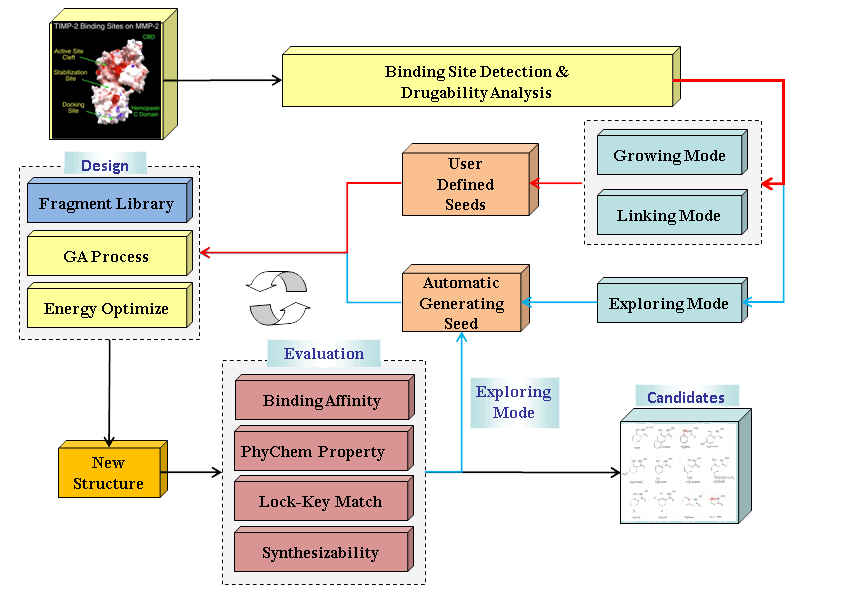

An overview of LigBuilder V3 program
Most input parameters are assembled into some default parameter sets, and users could simply adjust the design strategy by loading these sets. Cavity:The default running settings file is under the path "LigBuilderV3/build/cavity.input". Build:The default user settings file is under the path "LigBuilderV3/build/usersettings.input" and the default running settings file is in the path "LigBuilderV3/build/build.input", please set the three files carefully before running your jobs. The parameter file defines the input files, the output files, and all the necessary parameters to run the program as you wish. It is in plain text, in which each line starts with a key word. You can find the detailed explanation of all the key words in the following pages of this manual.
Special keyword in parameter file of build:
INCLUDE // Include other parameter file to current position
$VariableName$ // Predefined global variable in the parameter file
[Function][TargetNum]Keyword[TargetID] // Function: the keyword is only valided for specific function
// TargetNum: the keyword is valided for N targets design
// TargetID: the keyword is valided for specific target
Some examples:
INCLUDE ../default/default.input // All keywords in file ../default/default.input are include
$NAME$ 1db4 // NAME is defined as 1db4
POCKET_GRID_FILE 1db4/$NAME$_grid_1.txt // Now the keyword is 1db4/1db4_grid_1.txt, because $NAME$ is defined as 1db4
MINIMAL_PKD 5 // MINIMAL_PKD is 5
MINIMAL_PKD[] 5.2 // MINIMAL_PKD for all targets is 5.2
MINIMAL_PKD[3] 5.5 // MINIMAL_PKD for target 3 is 5.5
[Growing]MINIMAL_PKD[3] 5.8 // MINIMAL_PKD for target 3 in growing mode is 5.5 [Growing][4]MINIMAL_PKD[3] 6.0 // MINIMAL_PKD for target 3 in a 4 targets design in growing mode is 5.5
Latest key words will override previous key words. INCLUDE keyword will guide the program to load another parameter file. Predefined parameters($VariableName$) will replace the corresponding string to the redefined string in all parameters inclulding these inherited from other parameter file. In the example, the "POCKET_GRID_FILE" will be set to "1db4/1db4_grid_1.txt" for the string "$NAME$" has been replaced by string "1db4". Conditional parameters([Condition]) only take effect when the program executes the certain function or certain mode in the bracket on the left and/or for certain target in the bracket on the right. Attention: Predefine and Conditional parameters are just supported by Build module.
Cavity has three main functions: first, analyze the binding site and prepare the information necessary for running Build; second, estimation the ligandability of the binding site. Third, derive the key interaction sites within the binding site and suggest a pharmacophore model.
Synopsis of running Cavity:
cavity Parameter_file
For example:
./cavity cavity.input
The major function of Build is constructing ligand molecules for the target protein by applying the fragment-based design strategy. All the molecules are developed and evolved with a Genetic Algorithm procedure. All resultant molecules will be collected in a file and reported in HTML pages.
Synopsis of running Build:
build -Function Parameter_file [Id]
For example:
./build -Automatic build.input
Function List:
Automatic:
Automatic: Automatic design mode for one-stop drug design. With this mode, LigBuilder V3 will monitor all subroutines and accomplish all post-process procedure automatically. It is strongly recommend to run the design job with this mode.
Design:
Normal: Standard design mode. DISCARD previous seed library. It will also OVERWRITE previous result file.
Daemon: Daemon design mode, auto resume from faults. DISCARD previous seed library. It will OVERWRITE previous result file.
Continue: Standard continue mode. Load previous seed library. It will APPEND to previous result file.
DContinue:Daemon continue mode, auto resume from faults. Load previous seed library. It will APPEND to previous result file.
Control:
PAUSE: Pause
CONTINUE: Continue
RELOAD: Reload the parameter file(only Daemon/DContinue mode)
EXIT: Exit
FINISH: Force to stop design process and come to the post-process.(only Automatic mode)
Process results:
Process: Convert result file (LIG format) to Mol2 format
Filter: Filtering results with structure constrains
Score: Estimate the ligand binding affinity of results by Score function
Recommend: Help user to select top elites from large result sets.
Cluster: Clustering results
ReportCls: Report the clustering results in HTML
Synthesize: Perform synthesis analysis
ReportSyn: Report the synthesis analysis results in HTML
Tools:
Seed: (a) Extract seed structures from known inhibitors( for growing and linking strategies) (b) Mapping and pairwise user's seed files in multi-target design mode
Interaction: Extract key interactions from known inhibitors to construct target-specific biased scoreing function
Derivation: Hetro-ring replacing
Search: Substructure searching
Similarity: Similarity searching
Build database:
ExtLibrary: Build rigid fragments library ( extracting fragments from known inhibitors, for mimcs design)
RotLibrary: Build rotatable fragments library (extracting fragments from drug like compounds)
SynDatabase: Build reaction database
MatDatabase: Build material database
1) Get receptor for RCSB PDB: Human non-pancreatic secretory phospholipase A2. (PDB entry 1db4):
receptor/1db4.pdb //PDB file of the protein (for Cavity)
2) Prepare the input file for Cavity
cavity.input // set the receptor path to target PDB file
-----------------------------------------------------------------
RECEPTOR_FILE receptor/1db4.pdb
-----------------------------------------------------------------
3) Run Cavity:
./cavity cavity.input
4) Determine cavity id of target binding site and estimate the ligandgability (it is better to visually check):
receptor/1db4_surface_1.pdb //
cavity id=1 and predicted maximal pKd=8.03
-----------------------------------------------------------------
REMARK 5 Pedicted Maximal pKd 8.03
-----------------------------------------------------------------
5) Prepare the input file for Build
build.input // set the receptor info based on result from Cavity
-----------------------------------------------------------------
POCKET_ATOM_FILE receptor/1db4_pocket_1.txt
POCKET_GRID_FILE receptor/1db4_grid_1.txt
-----------------------------------------------------------------
6) Run Build:
Start two shells first
Shell A:
./build -Automatic build-just-example.input
Shell B:
chmod +x run_1db4.list //you'd better run the list on your cluster rather
./run_1db4.list
//than on the system node in practice
NOTICE:
1: It is recommended to assign each task in the list file (eg. run_1db4.list) to a computer cluster rather than run them sequentially in practice.The tasks in the list file will not automatically run, user should run them by yourself.
2: It is not necessary to make all tasks run or finished. User can even carry out tasks on different operation systems and then copy the output files to the outputting path assigned in the "LigBuilderV3/default/path.input". In this way, these tasks will NOT be monitored by the server, and please collect the output files before starting post-process.)
3: If a subroutine lose connection as appeared in the activity list, please check the memory status first and make sure that a suitable memory strategy is used. Try to terminate the subrountie and restart it. (Sometimes
the activity list would not capture the real status of subroutines,
especially when the harddisk or memory load is reaching the system
limit, that is, you'd better keep watching for a period of time to make
sure whether the subroutines are functional or not.)
4: Simply restart the server if it is abruptly terminated. The restarted server will reconnect to all active subroutines. DO NOT start more than one server for one design task.
NOTICE: the build-just-example.input is just for a quick show, user should use the LigBuilderV3/build/build.input as templates of parameters of real projects. The LigBuilderV3/build is also the working directory of LigBuilder, and all operation should be execute in the directory
7) View the report pages when accomplished
result/report_1db4/report.html // report page index in HTML
result/report_1db4/images/ // directory of report pages and images
Sample parameter files, i.e. "build.input", "cavity.input", are also included in the same directory.
[Content] [Introduction] [Download] [Install] [Overview] [Cavity] [Build] [Skills] [FAQs]
(These web pages are edited by Yaxia Yuan. Latest update: Oct. 2019)